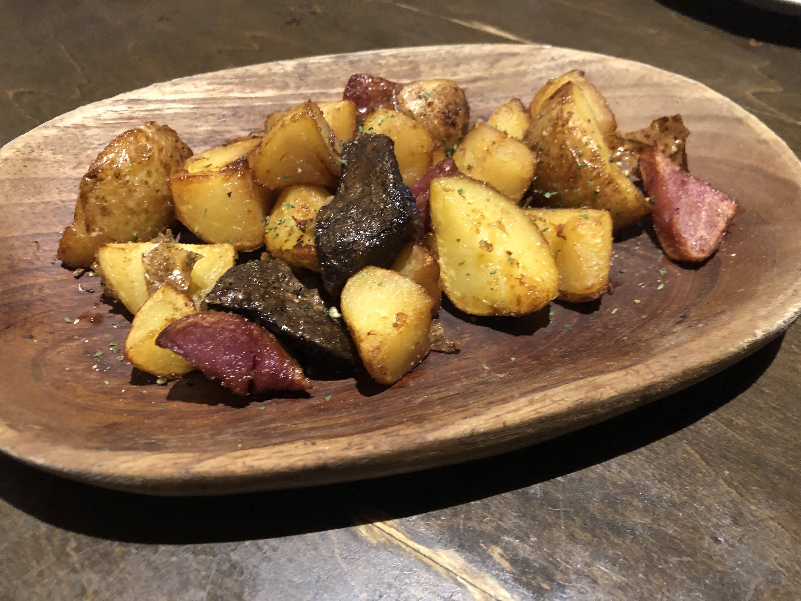
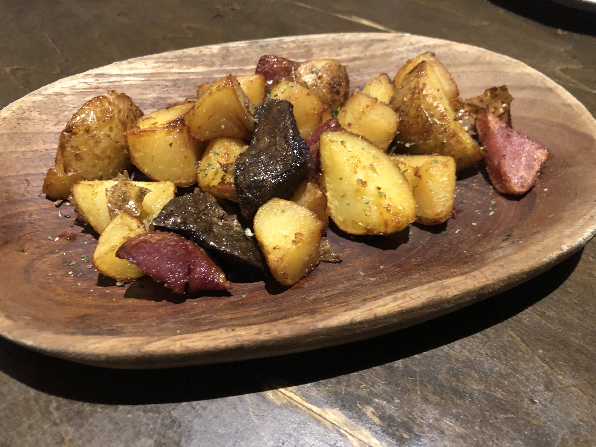
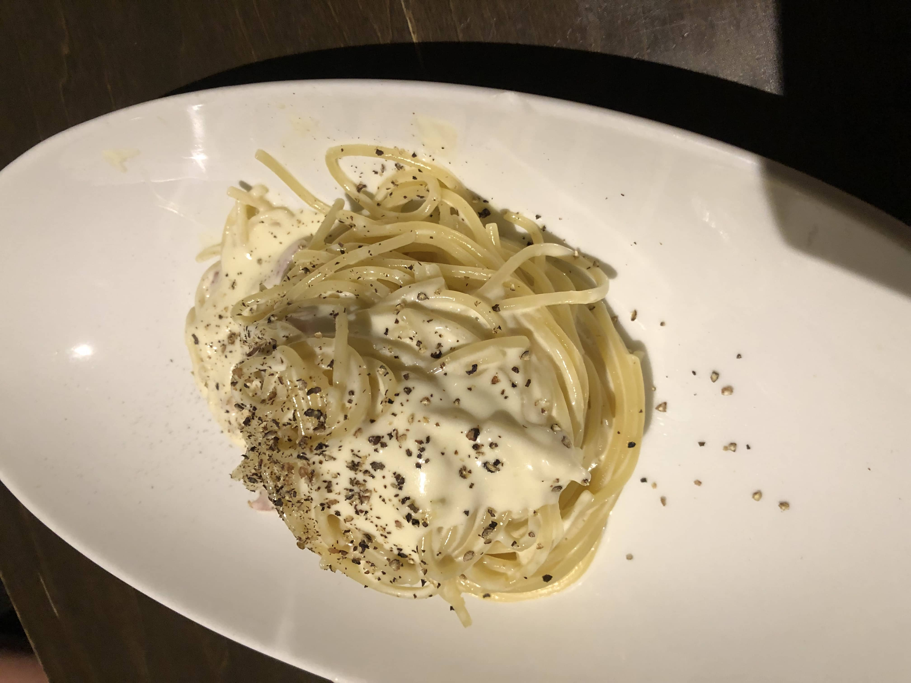
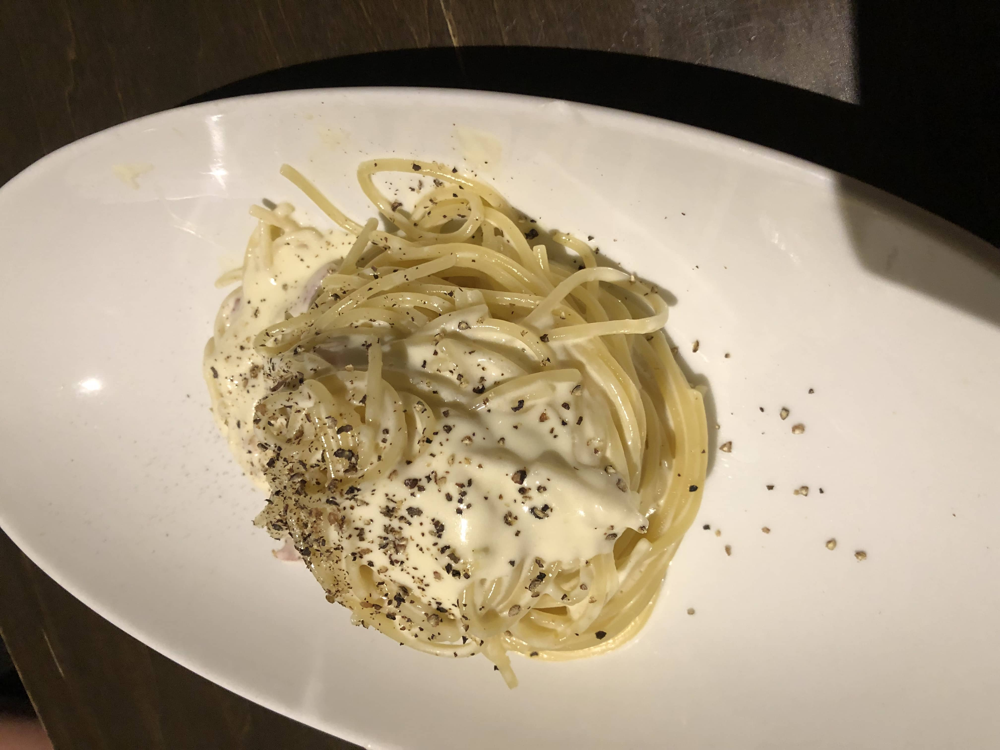

Lungocarnival Vegitable Sapporo Station North
It is called Lungo Carnival Vegetable Izakaya, which has several branches in Sapporo where I enjoyed three kinds of potatoes, including Shadow Queen, Northern Ruby, and Kitaakari, with rolled french fries. We ordered a course this time and enjoyed a pasta dish finished with a huge whole Italian Granapadano cheese. We also enjoyed a special order of fresh or steamed Hokkaido oysters for 100 yen. On the way home, we were given potatoes and carrots as souvenirs!
[hotpepper] https://www.hotpepper.jp/strJ001008723/
 

 


Sushi-Bar Shiki Hanamaru Susukino
Sushi restaurant with an authentic wooden Japanese atmosphere where you can enjoy sushi and a-la-carte dishes watching the chefs' splendid technique over the counter. We have a great selection of sake from local Nemuro to all over Japan that can be paired perfectly with sushi. In addition to the counter seats, there are table seats and sunken tatami mat seats, which would be suitable for any groups and situations.
[Official Website] https://www.sushi-hanamaru.com/store/details/s07.html/


Kushidori
Yakitori in Hokkaido? It might be a bit strange, but "Kushitori" has several branches in Sapporo and very reasonable yakitori is served. Since the shop is always full, we took them out to the hotel we stayed and had them as after-dinner snack with Hokkaido's limited beer, Sapporo Classic. Skewer of potatos and other skewers that are unique to Hokkaido are awesome.
[Official Website] https://kushidori.com/

Katsutoku
This is a pork cutlet restaurant of the Triton Group, famous for its kaitenzushi (conveyor-belt sushi). We had originally planned to go to Triton Toyohira, but we had to wait for two hours on Saturday night. We worried where to go in the snow when we found a tonkatsu restaurant just next to the Toriton and went in. They have a full lineup of fried foods, so we ordered original cutlet and octopus zangi as a side dish. It looks like a family restaurant, but it tastes good and you can choose five-grain rice. It would be a good option when you are tired of eating Sushi in Sapporo.
[Official Website] https://katsutoku.jp/